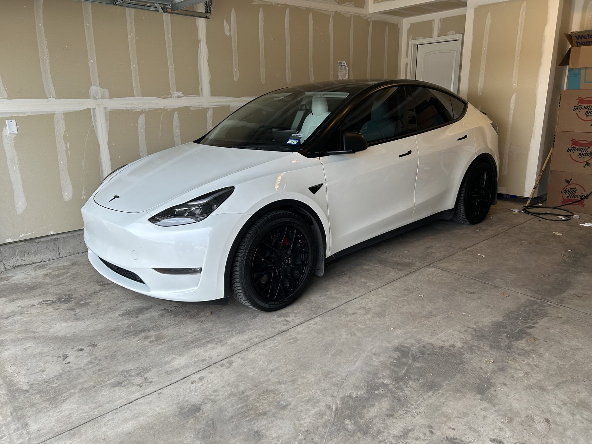

Fall · Log 004 · Family Road Trip
800 miles, two toddlers, two corgis: a Model Y Thanksgiving road trip.

Shortly after the Oregon adventure that brought this Model Y into the family (Log 003, if you missed the part where I slept in the trunk), we gave it the opposite kind of test: a Thanksgiving family vacation. San Angelo, Texas to Pensacola, Florida — roughly 800 miles across Texas and the entire Gulf Coast, with a three-year-old, a four-year-old, and two corgis on board. This is the trip report every parent considering an EV actually wants: not the lap-time review, the can-my-whole-circus-live-in-this-thing review.
- Vehicle
- 2021 Model Y Performance
- Route
- San Angelo → Pensacola
- Distance
- ~800 mi via I-10
- Crew
- 2 adults · kids 3 & 4 · 2 corgis
- Overnight
- Baton Rouge, hotel w/ charger
- Arrival estimate error
- 5–10% optimistic
The route, and the stop I'd drive to on purpose
The path is basically a tour of the I-10 Supercharger corridor: down through Texas, across Louisiana, along the coast into the Florida panhandle. The Texas stops were solid, and one of the best of the whole trip was in the Houston area — a Supercharger at an HEB. If you're not from Texas, HEB is a grocery store the way Texans will explain to you, at length, that it is not just a grocery store. Charging while the kids stretch their legs and you restock snacks inside an HEB is about as good as a road-trip pit stop gets. Whoever decided chargers belong at grocery stores understood family travel better than most rest-stop designers ever have.
We broke the trip in Baton Rouge — a nice hotel with a charger, which is the family-EV cheat code: arrive with whatever's left, sleep, wake up at 100 percent with zero minutes spent waiting. From there, the coastline run to Pensacola was the pleasant surprise of the trip. The Superchargers along that stretch were consistently convenient and well-placed — restaurants nearby, nice areas, easy in and out. After the roulette-wheel charging stops of the Oregon trip, the Gulf Coast corridor felt downright civilized. (We did have one unplanned stop before Pensacola, plus an issue with the car we only figured out later — both of those are their own story, coming in a future log.)
The honest part: Tesla's arrival percentage is an optimist
Here's the finding I want every new Tesla road-tripper to tattoo somewhere visible. The navigation tells you what percentage you'll arrive with — say, 20 percent. Treat that number the way you treat a contractor's timeline. In our experience, plan on arriving with 5 to 10 points less than promised. Predicted 20 often means a real-world 10 to 15, because the estimate doesn't fully price in your speed, the headwind, the cabin load, and the fact that your car is carrying a family of four plus two corgis and a Thanksgiving's worth of luggage.
Fact-checking our own range rituals: when the buffer got thin, we did the usual desperate-EV-family liturgy — AC off, windows up, unplug the phones. For the record, the physics only backs some of that. Windows up at highway speed is real: open windows wreck your aerodynamics, and past about 50 mph that costs more than the AC does. The AC itself is a modest but real draw — worth a few percent on a long leg. Unplugging phones, though? A charging phone pulls maybe 10 to 15 watts against a car consuming 15,000-plus. Over a whole leg it's worth something like a single mile. We did it anyway. Range anxiety is not a rational religion, but it does have rituals.
Kids, corgis, and cargo: the packing report
The Model Y swallowed the whole operation. Trunk full, frunk full, and the under-trunk well — the hidden basement below the cargo floor that new owners keep discovering by accident — full too. The corgis had room to properly sprawl out, which is the corgi seal of approval, and they genuinely loved the trip. The kids, three and four at the time, turned out to be the secret argument for EV road-tripping: charging stops forced the rhythm that little kids need anyway. Every couple hundred miles, everybody gets out, stretches, snacks, runs around. In a gas car you're tempted to push through; the battery makes the humane schedule mandatory.
Would we do it again?
In a heartbeat — and my wife would sign up first. She's the family's charging-stop enthusiast: every stop is a chance to get out, find food, and see something. If your co-pilot views a 25-minute charge as an opportunity rather than a delay, the family EV road trip isn't a compromise at all. It's just a road trip with better-scheduled snack breaks. Verdict from all six of us — two adults, two kids, two corgis: the Gulf Coast run in a Model Y is an easy yes.